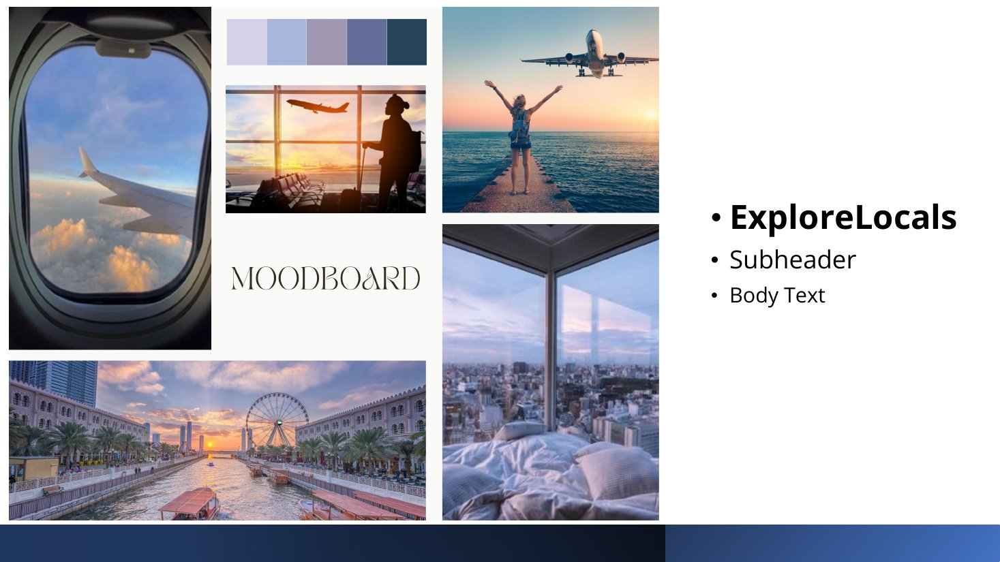
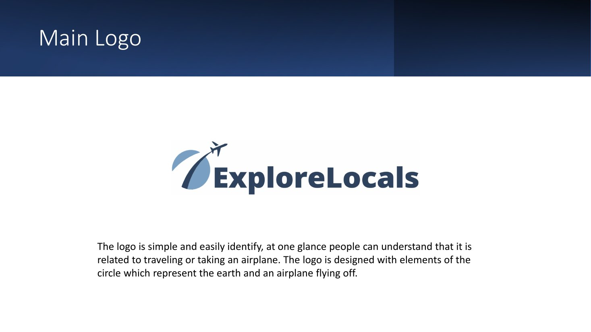
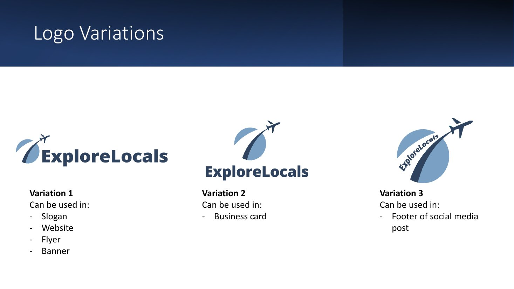
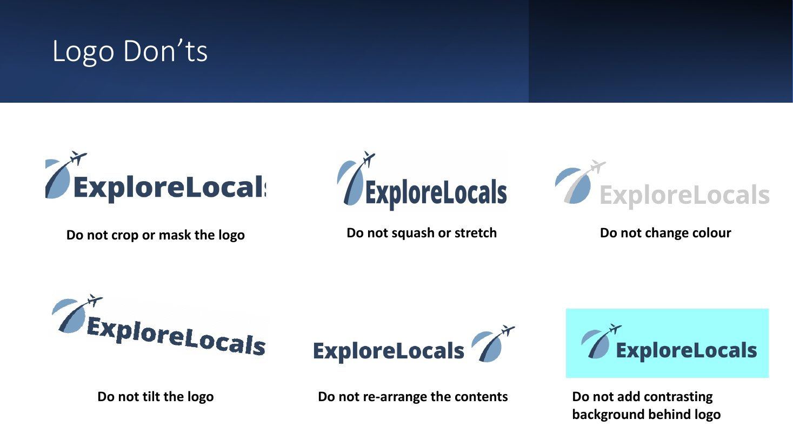
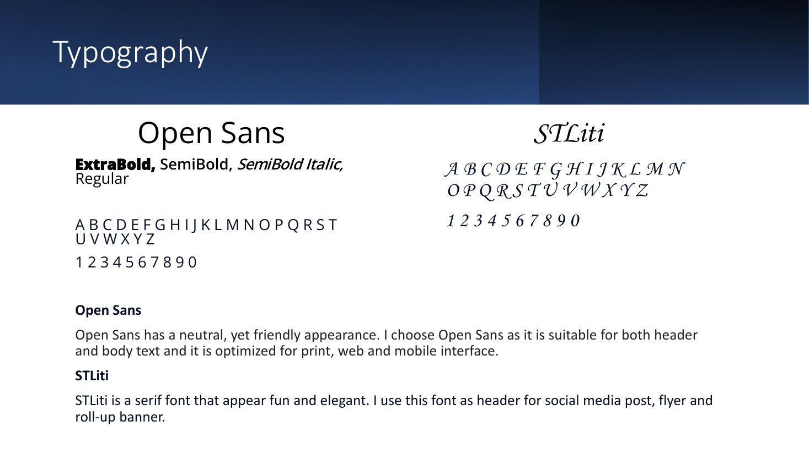
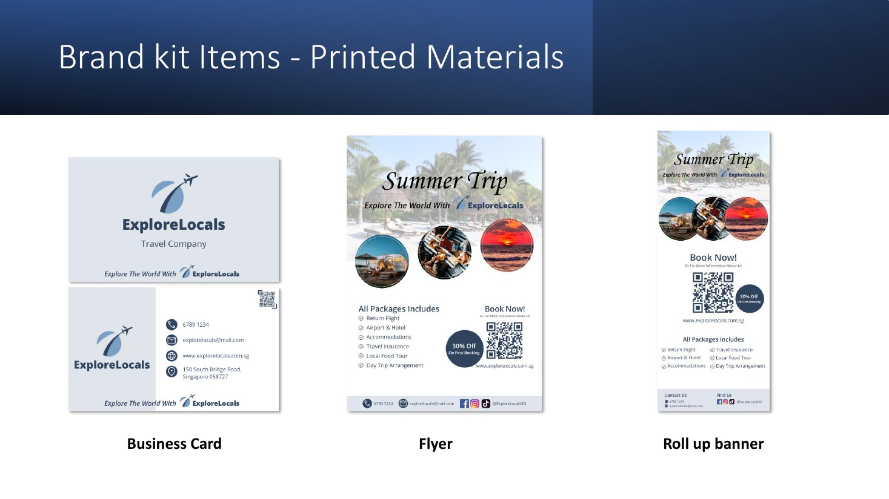
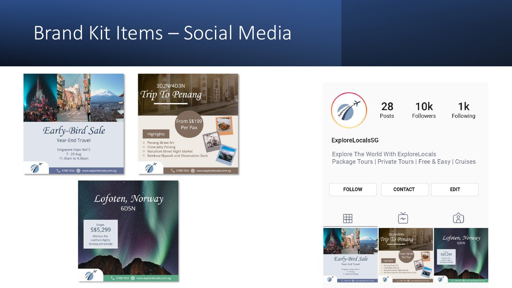
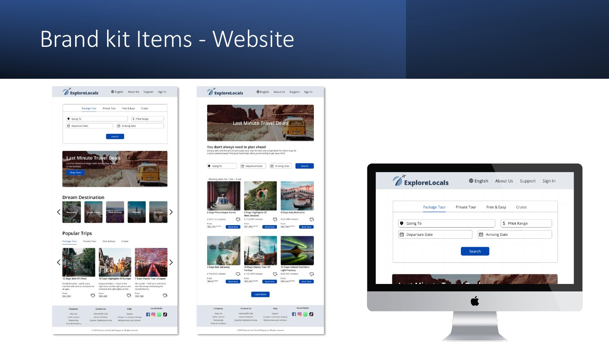
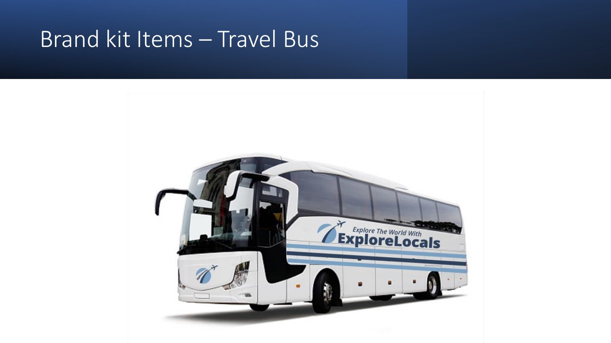

ExploreLocals – Travel Brand Guidelines
- Role
- Brand designer (individual)
- Brief
- Brand guidelines for a local company expanding internationally
- Deliverables
- Logo system, colour palette, typography, usage rules, brand kit
- Tools
- Adobe Illustrator, Photoshop
The brief
ExploreLocals is a travel company that offers authentic local experiences, connecting travellers with the culture, history and traditions of the places they visit. To expand overseas, it needed a brand people would recognise and trust. Its target audience is adults aged 25 to 45 who love to travel and want more than a standard tour.
Research
I studied how three established travel companies present themselves:
- Chan Brothers: TV and artist collaborations; a logo built from an air ticket, a bird and the earth, in orange and white.
- Expedia: frequent promotions and merchandise; an aeroplane mark in blue and yellow.
- WTS Travel: resort partnerships and branded buses; blues and yellow.
Most competitors used blue, and aeroplanes and globes were common, so the brand needed to use familiar travel cues while still being distinct.

The logo

The logo is designed to be understood at a glance: a circle representing the earth, with an aeroplane flying off it.


Clear space is defined by the letter “E” of the brand name: nothing may come closer to the logo than that.
Colour and type
- #2F425E Primary
- #7AA0C4 Primary
- #FFFFFF Secondary
- #000000 Secondary
Blue evokes the sky, the sea and the earth, and is associated with open space, freedom and imagination: exactly what a travel brand should feel like. Two clean, bold shades give contrast without adding a new colour.

Open Sans is neutral but friendly and works for headings and body text across print, web and mobile. STLiti adds an elegant, playful touch, used only for headlines on social posts, flyers and banners.
The brand kit




What I learned
- Guidelines matter as much as the logo. The don'ts and clear-space rules are what keep a brand consistent when other people use it.
- Research is a shortcut to differentiation: seeing how often competitors used blue and aeroplanes told me which cues to keep and where to be different.
- A small, strict system (two blues, two typefaces) is easier to apply across a bus, a website and a business card than a large one.